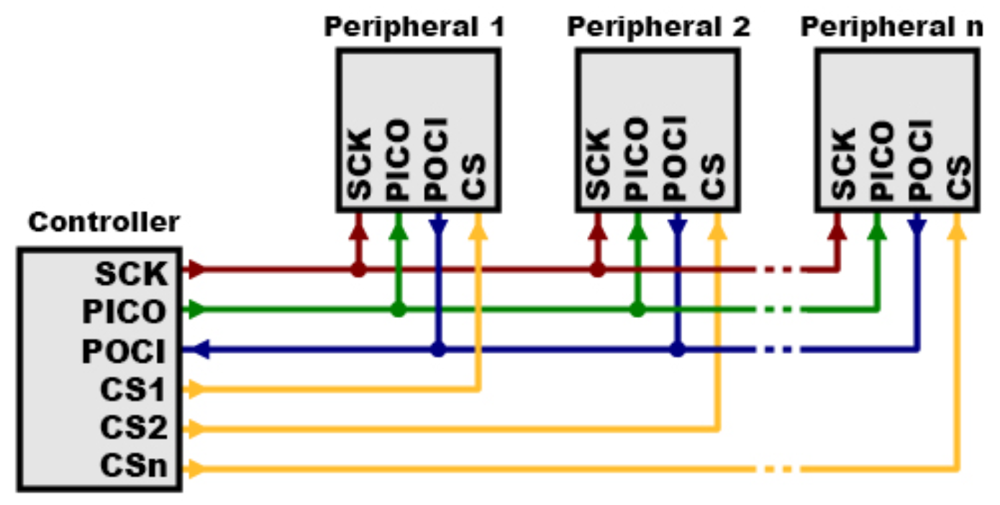
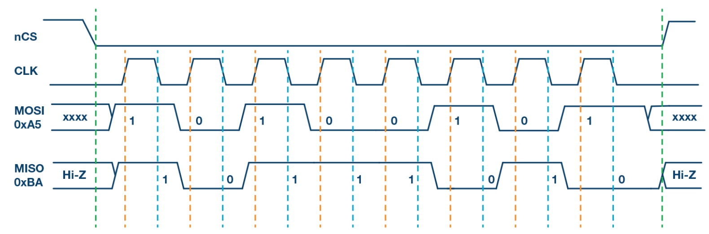
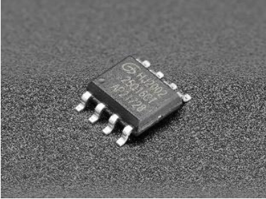
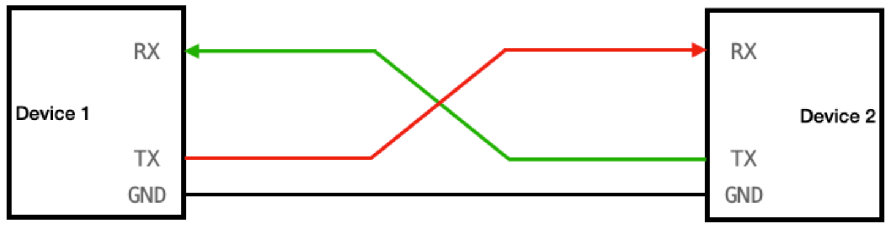
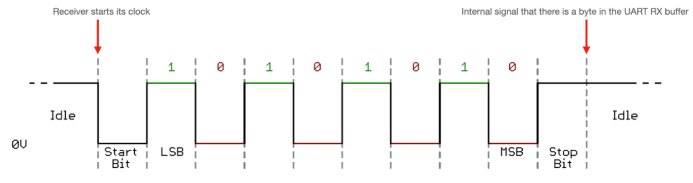
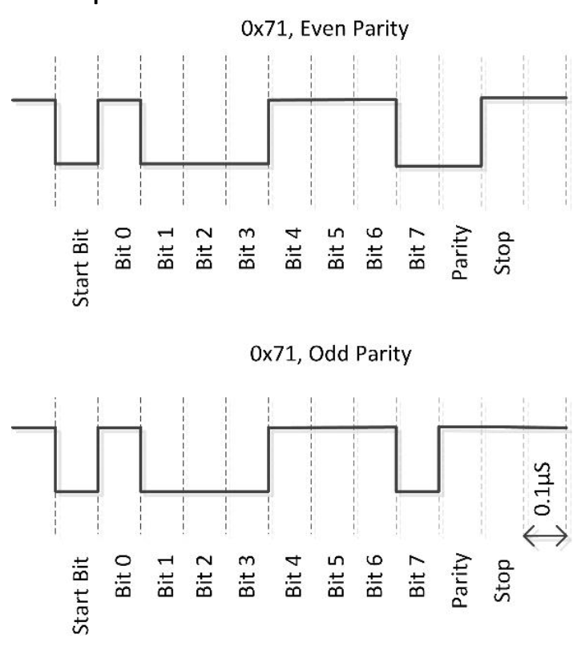
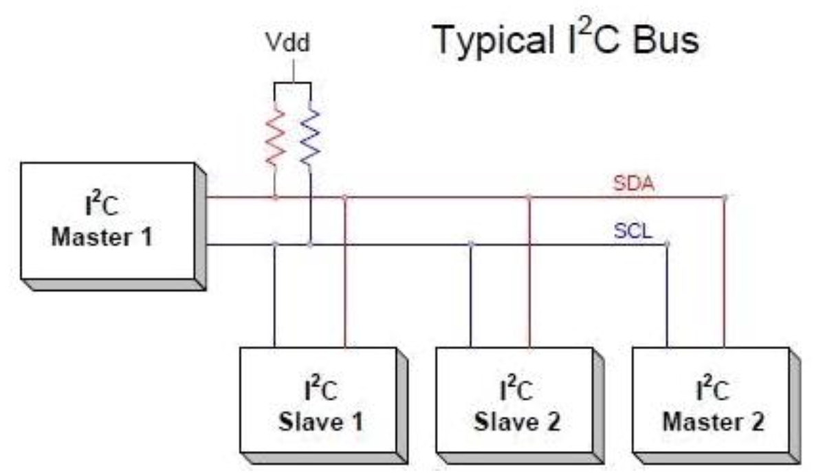
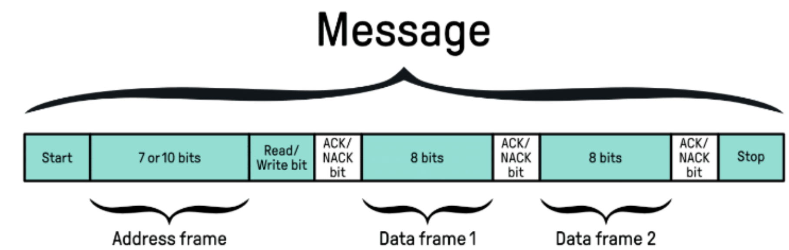
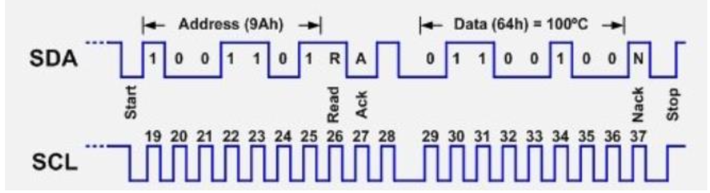

Transmissão Serial de Dados
Faça o download do PDF de introdução:
Contexto Global da Transmissão de Dados
A quantidade de bytes transmitidos por minuto no planeta é gigantesca e cresce constantemente. Podemos estimar esse valor com base no tráfego global de internet. De acordo com relatórios da Cisco e outras fontes sobre o tráfego global de dados, em 2023 o tráfego de internet mundial foi aproximadamente de 500 exabytes (EB) por mês, o que nos dá 11,6 petabytes por minuto.
Esta quantidade não inclui ainda: - Dados trocados entre microcontroladores e sensores - Comunicação entre atuadores - Transmissões internas dentro de arquiteturas de microcontroladores
Grande parte de todos esses dados são transmitidos serialmente. Uma alternativa seria a transmissão paralela, mais rápida mas menos robusta.
Cálculo de Tráfego de Dados 1
Resposta!
500 EB/mês = 500 × 10^18 bytes/mês
Em um mês (30 dias): 30 × 24 × 3600 = 2.592.000 segundos
500 × 10^18 ÷ 2.592.000 ≈ 193 × 10^9 bytes/s = 193 GB/s
Transmissão Serial vs. Paralela
Transmissão Serial
- Definição: Os bits são enviados um de cada vez, sequencialmente, por um único canal de comunicação
- Vantagens:
- Mais confiável para comunicações a longa distância
- Requer menos fios ou pistas condutoras
- Menor interferência eletromagnética
- Comunicação eficiente em distâncias maiores
- Exemplos: USB, RS-232, Ethernet, comunicação de redes
Transmissão Paralela
- Definição: Vários bits são transmitidos simultaneamente através de múltiplos canais (8, 16 ou 32 bits)
- Características:
- Mais rápida que a serial
- Problemas de distorção de sinal em distâncias longas
- Maior interferência entre canais
Comparação Serial vs Paralela 2
Resposta!
A transmissão serial usa menos fios, o que resulta em menor interferência eletromagnética entre os canais. Em longas distâncias, essa interferência se torna um problema crítico na transmissão paralela.
Classificação da Transmissão Serial
1. Meio de Transmissão
Transmissão Guiada (com fio)
| Tipo | Características | Aplicações |
|---|---|---|
| Par trançado | Baixo custo, fácil instalação | Redes Ethernet (RJ-45) |
| Cabo coaxial | Boa blindagem, média distância | Redes antigas, TV a cabo |
| Fibra óptica | Alta velocidade, baixa perda | Redes de longa distância |
Transmissão Não Guiada (sem fio)
| Tipo | Alcance | Aplicações |
|---|---|---|
| Wi-Fi | Local (até 100m) | Redes domésticas e empresariais |
| Bluetooth | Curto (até 10m) | Dispositivos pessoais |
| Rádio/Satélite | Longo (global) | Telecomunicações, TV |
| Infravermelho | Muito curto (linha de visão) | Controles remotos |
2. Direcionalidade
- Simplex: Transmissão unidirecional (ex.: rádio, TV)
- Half-duplex: Bidirecional, mas não simultânea (ex.: walkie-talkie)
- Full-duplex: Bidirecional simultânea (ex.: telefone)
3. Sincronização
- Síncrona: Dados transmitidos continuamente em blocos com clock comum
- Assíncrona: Cada caractere transmitido separadamente com bits de controle
4. Modulação
- Analógica: Sinal contínuo (AM, FM, PM)
- Digital: Sinal binário (ASK, FSK, PSK)
Exercício 3
Arquitetura em Camadas
O conceito de arquitetura em camadas organiza a comunicação de forma modular e estruturada. Cada camada tem função específica e interage apenas com camadas adjacentes.
Modelo de Referência OSI
| Camada | Nome | Função Principal | Exemplos |
|---|---|---|---|
| 7 | Aplicação | Interface com usuário | HTTP, FTP, SMTP |
| 6 | Apresentação | Formatação, criptografia | SSL/TLS, JPEG |
| 5 | Sessão | Controle de conexões | NetBIOS, RPC |
| 4 | Transporte | Controle de fluxo | TCP, UDP |
| 3 | Rede | Roteamento | IPv4, IPv6 |
| 2 | Enlace | Controle de acesso ao meio | Ethernet, Wi-Fi |
| 1 | Física | Transmissão de bits | Cabos, ondas de rádio |
Modelo OSI 4
Resposta!
A camada de Apresentação (camada 6) é responsável pela formatação, criptografia e compressão de dados. O protocolo SSL/TLS, usado no HTTPS, opera nesta camada.
Protocolos de Comunicação Serial
SPI (Serial Peripheral Interface)
SPI é um protocolo de comunicação serial síncrono desenvolvido pela Motorola nos anos 1980, usado para troca de dados entre microcontroladores e periféricos.
Características Principais
- Comunicação Mestre-Escravo: Um mestre controla múltiplos escravos
- Transmissão Síncrona: Clock dedicado para sincronização
- Alta Velocidade: Frequências de vários MHz
- Full-Duplex: Transmissão e recepção simultâneas
Pinagem SPI
| Pino | Nome Completo | Função |
|---|---|---|
| SCLK | Serial Clock | Clock gerado pelo mestre |
| MOSI | Master Out, Slave In | Dados: mestre → escravo |
| MISO | Master In, Slave Out | Dados: escravo → mestre |
| SS/CS | Slave Select/Chip Select | Seleção do escravo ativo |

Aplicações do SPI
- Displays (OLED, TFT, e-paper)
- Memórias Flash e EEPROMs
- Sensores de alta velocidade
- Conversores AD/DA
- Módulos de comunicação (RFID, Wi-Fi, LoRa)
Timing SPI
O gráfico mostra a transmissão entre mestre e escravo: - Subida do clock: Mestre lê MISO - Descida do clock: Escravo lê MOSI

Exercício 5
Hardware SPI
O chip SPI recebe dados de camadas superiores, sequencializa e transmite bit a bit. Funciona como um "veículo transportador" que respeita as regras da comunicação.

Protocolo SPI 6
Resposta!
Cada escravo (sensor) precisa de seu próprio pino CS para ser selecionado individualmente pelo mestre. Portanto, 3 sensores = 3 pinos CS.
UART (Universal Asynchronous Receiver-Transmitter)
UART é um protocolo de comunicação serial assíncrono amplamente utilizado em sistemas embarcados.
Características Principais
- Comunicação ponto-a-ponto: Dois dispositivos
- Assíncrono: Sem clock compartilhado
- Dois fios: TX (transmissor) e RX (receptor)
- Conexão cruzada: TX₁ → RX₂ e RX₁ → TX₂

Estrutura do Frame UART
| Campo | Bits | Função |
|---|---|---|
| Start Bit | 1 | Indica início da transmissão (sempre 0) |
| Data Bits | 5-9 | Dados úteis (normalmente 8 bits) |
| Parity Bit | 0-1 | Verificação de erro (opcional) |
| Stop Bits | 1-2 | Indica fim da transmissão (sempre 1) |

Baud Rate (Taxa de Transmissão)
Velocidades padrão em bits por segundo (bps):
| Baud Rate | Aplicação |
|---|---|
9600 |
Padrão geral |
19200 |
Aplicações médias |
38400 |
Comunicação moderada |
57600 |
Aplicações rápidas |
115200 |
Depuração e desenvolvimento |
1 Mbps+ |
Implementações avançadas |
Importante
Ambos os dispositivos devem usar o mesmo baud rate, caso contrário os dados serão corrompidos!
Exercício 7
Verificação de Paridade
| Tipo | Descrição |
|---|---|
| Par (Even) | Número total de bits "1" deve ser par |
| Ímpar (Odd) | Número total de bits "1" deve ser ímpar |
| Nenhuma (None) | Sem verificação de paridade |

Verificação de Paridade 8
Resposta!
O byte 11010110 tem 5 bits "1". Para paridade PAR, o número total de bits "1" (incluindo o bit de paridade) deve ser par. Como 5 é ímpar, o bit de paridade deve ser 0 para tornar o total par (5 + 0 = 5, ainda ímpar... erro na questão! Deveria ser 1 para tornar 6, que é par).
Detecção de Erros
- Parity Error: Bit de paridade incorreto
- Framing Error: Bit de stop não encontrado
- Overrun Error: Receptor sobrecarregado
Hardware UART
Microcontroladores modernos incluem chips UART como periféricos. A comunicação com o chip é feita por camadas superiores de software.
I²C (Inter-Integrated Circuit)
I²C é um protocolo de comunicação serial desenvolvido pela Philips (NXP) que utiliza apenas dois fios para comunicação entre múltiplos dispositivos.
Características Principais
- Barramento compartilhado: Múltiplos dispositivos em 2 fios
- Endereçamento: Cada dispositivo tem endereço único (7 ou 10 bits)
- Mestre-Escravo: Mestre controla a comunicação
- Half-duplex: Transmissão ou recepção, não simultânea
Pinagem I²C
| Pino | Nome Completo | Função |
|---|---|---|
| SCL | Serial Clock Line | Clock compartilhado |
| SDA | Serial Data Line | Dados bidirecionais |
Especificações Técnicas
| Parâmetro | Valor |
|---|---|
| Tensão | 3,3V ou 5V |
| Velocidade Padrão | 100 kbit/s |
| Velocidade Rápida | 400 kbit/s |
| Velocidade Rápida Plus | 1 Mbit/s |
| Dispositivos máximos | 128 (endereço 7 bits) |
Protocolo de Comunicação
- Endereçamento: Mestre envia endereço do escravo
- Confirmação: Escravo responde com ACK
- Transmissão: Dados são transmitidos
- Verificação: ACK/NACK confirma recepção

Estrutura do Frame I²C
| Campo | Bits | Função |
|---|---|---|
| Start Bit | 1 | Início da transmissão |
| Address | 7-10 | Endereço do dispositivo |
| R/W Bit | 1 | Read (1) ou Write (0) |
| ACK/NACK | 1 | Confirmação do escravo |
| Data | 8 | Dados úteis |
| ACK/NACK | 1 | Confirmação dos dados |
| Stop Bit | 1 | Fim da transmissão |

Exemplo Prático
Transmissão do byte 01100100 (decimal 100) para o escravo 1001101:

Exercício 9
Vantagens e Desvantagens
Vantagens: - Apenas 2 fios para múltiplos dispositivos - Protocolo padronizado e amplamente suportado - Endereçamento automático - Baixo custo de implementação
Desvantagens: - Velocidade inferior ao SPI - Não ideal para longas distâncias - Barramento compartilhado pode criar gargalos
Comparação de Protocolos 10
Resposta!
O SPI é mais adequado pois oferece maior velocidade de transmissão (vários MHz) e comunicação full-duplex, essenciais para atualizações rápidas de displays de alta resolução.
Outros Protocolos de Comunicação Serial
Existem diversos outros protocolos especializados:
| Protocolo | Características | Aplicações |
|---|---|---|
| RS-232 | Comunicação serial padrão antiga | Equipamentos industriais legados |
| RS-485 | Comunicação diferencial, longas distâncias | Redes industriais, automação |
| CAN | Robusto, tolerante a falhas | Automotivo, sistemas críticos |
| 1-Wire | Um único fio + GND | Sensores de temperatura |
| USB | Universal, alta velocidade | Periféricos de computador |
Exercício 11
Leituras Complementares
Para aprofundamento em transmissão serial UART: